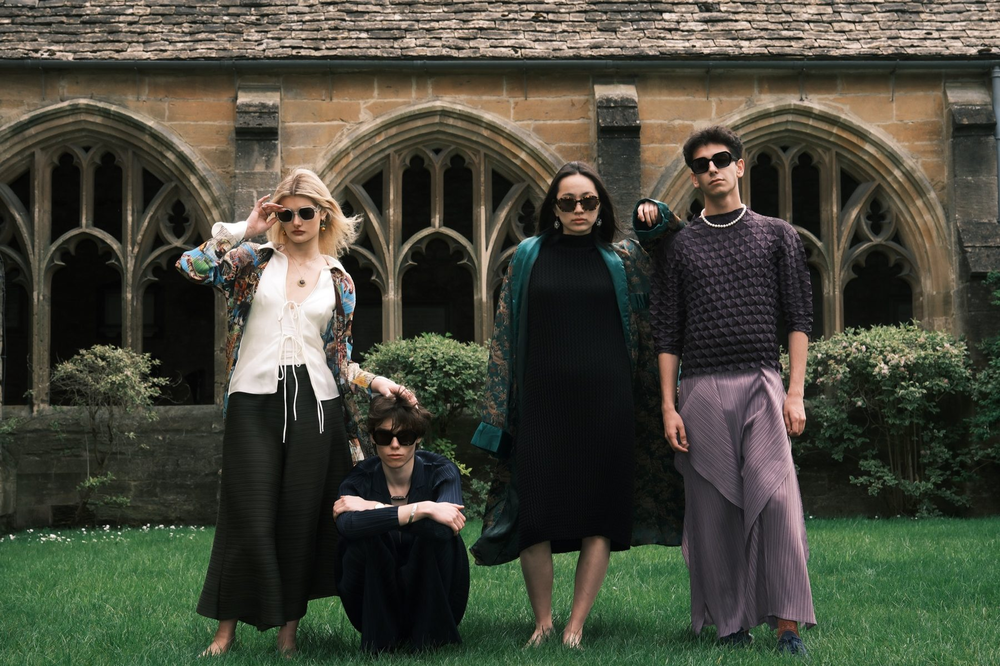
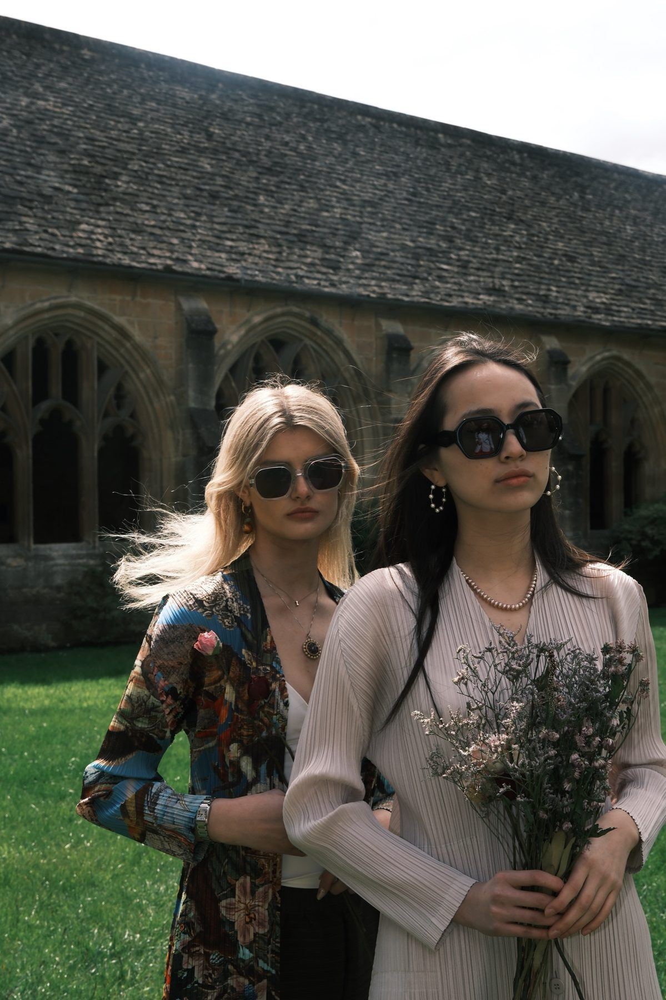
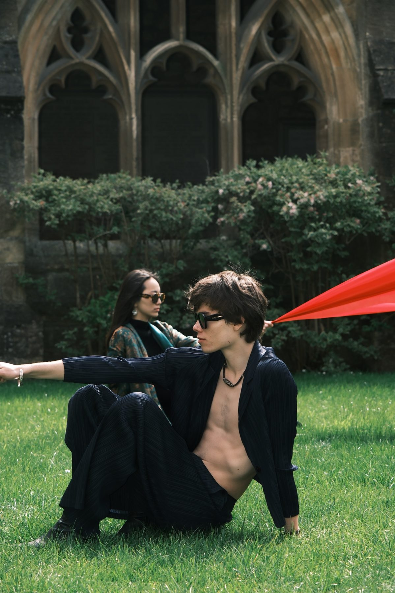
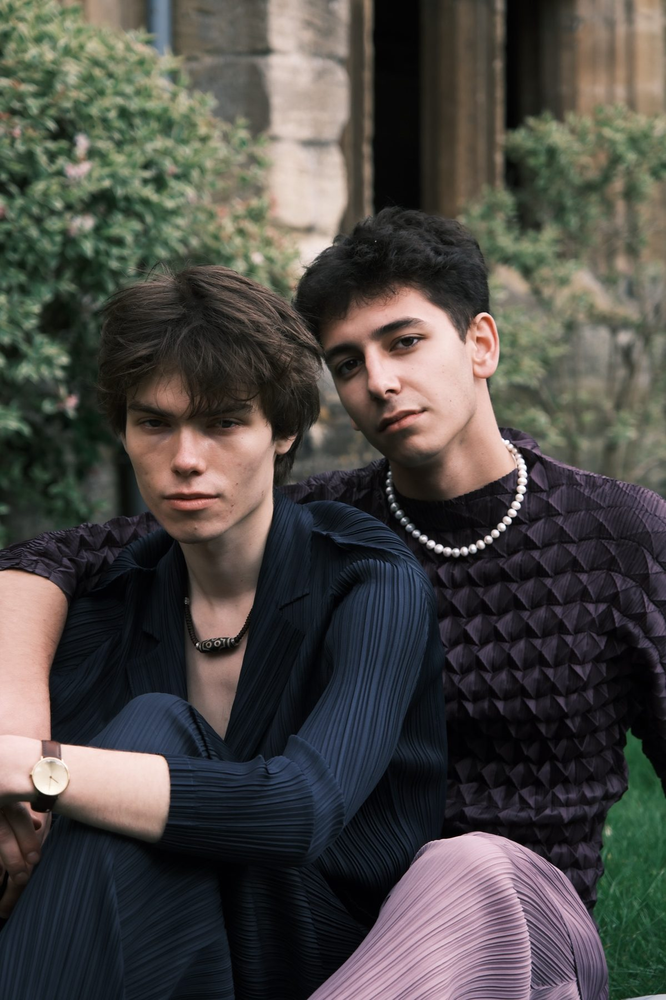
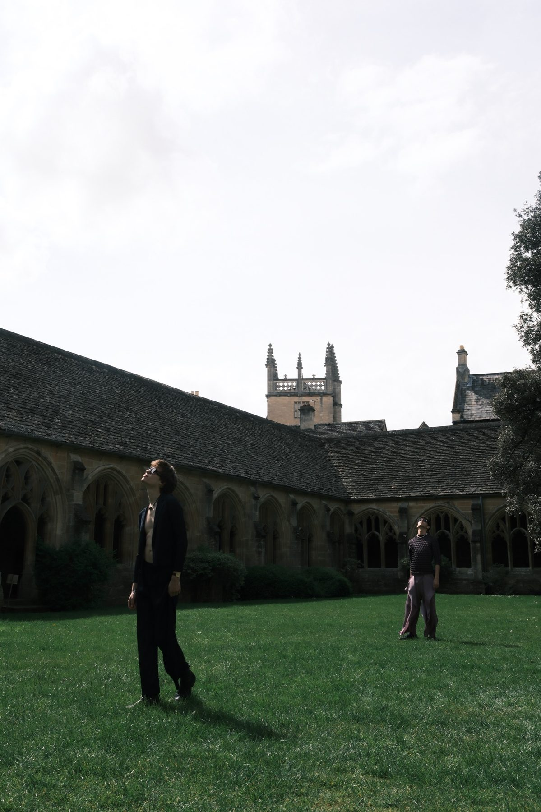
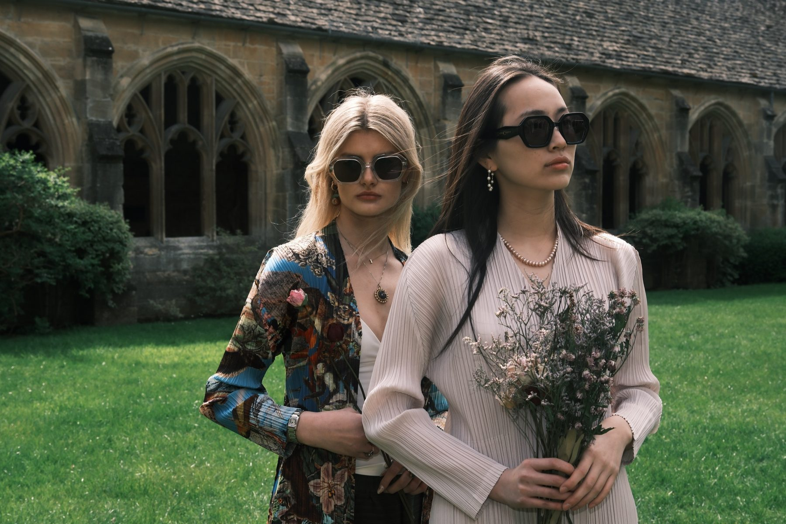
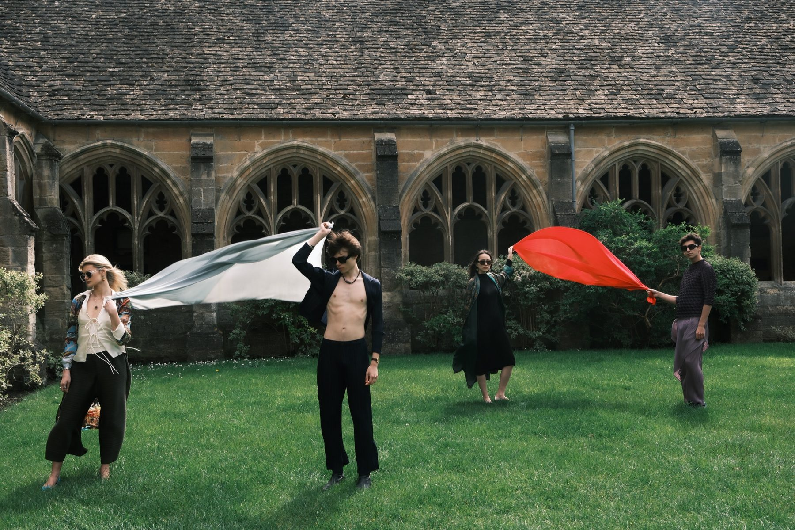

I worked on Oxford Fashion Gala for two years. In the first I was creative director, taking the show from concept to runway. In the second I was marketing director and ran the Instagram campaign.
the project, in short
year one
Creative director, concept to runway. Ticket sales ×2 (150 → 300).
year two
Marketing director, running the Instagram campaign. Ticket sales +33% (300 → 400).






